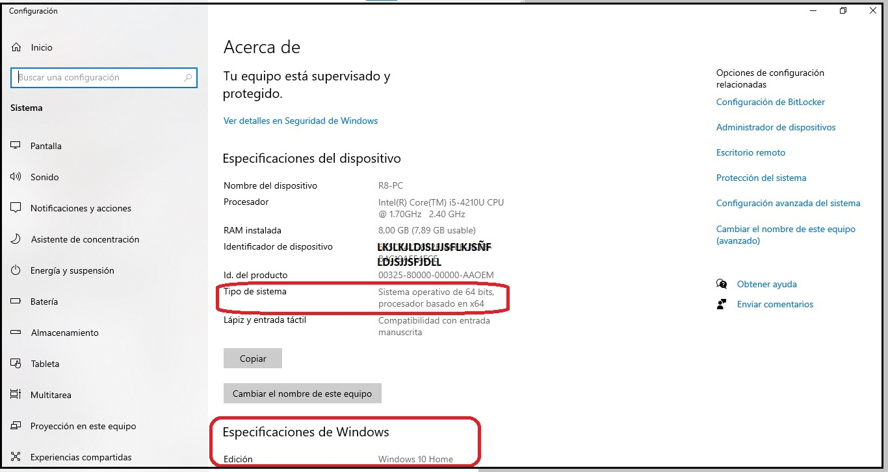

Como ya hemos comentado, los sistemas operativos se encargan de gestionar todo el trabajo de un dispositivo, para utilizar sus recursos de forma eficiente. Podríamos decir que son el intermediario entre el hardware y el usuario.
Un sistema operativo realiza las siguientes funciones:
- Gestiona las memorias: RAM, discos duros o tarjetas de memoria.
- Controla la carga del procesador.
- Asigna hilos de proceso para crear multitarea (apertura simultánea de varios programas).
- Instala, actualiza y desinstala (con la ayuda del usuario o automáticamente) programas y aplicaciones.
- Disponen de una interfaz gráfica (graphic shell) para que el usuario pueda interactuar cómodamente con los programas.
Los sistemas operativos para ordenadores más comunes son: Microsoft Windows, Linux y Mac OS.
Para dispositivos móviles, especialmente móviles y tablets, los más conocidos son Android e iOS.
Microsoft Windows
Actualmente es el más utilizado en ordenadores de sobremesa, y portátiles.
En 1985 Microsoft publicó la primera versión de Windows (Windows 1.0), una interfaz gráfica sencilla y no muy potente. Después de esta, Microsoft ha ido desarrollando versiones cada vez mejores. Las últimas son: Windows 10 y, posteriormente, Windows 11, lanzado en octubre de 2021.
Escritorio de Windows 10
Lo normal es que, al adquirir un ordenador, Windows venga preinstalado de fábrica, sin embargo, no siempre es así. Algunos ordenadores, especialmente los gaming, vienen sin Windows. Esto reduce su coste ya que no hay que pagar el extra por la licencia de Windows.
Aunque Windows no es gratuito, tiene la ventaja de que es posible actualizar a una versión más moderna sin coste alguno (si el hardware del ordenador lo permite).
Una forma de consultar la versión de Windows que tenemos instalada en nuestro ordenador es pulsando con el botón derecho sobre el botón de Inicio  (o usando las teclas Windows+X) y a continuación Sistema.
(o usando las teclas Windows+X) y a continuación Sistema.


Un aspecto importante que podemos consultar también accediendo al menú Sistema es si la arquitectura de nuestro equipo es de 32 o de 64 bits. Este dato es imprescindible conocerlo a la hora de descargarnos algún programa, ya que se suelen ofrecer versiones para cada tipo de arquitectura.
Las nomenclaturas de 32 y 64 bits se refieren a cómo se almacenan los datos. Los sistemas de 32 bits almacenan sus datos en bloques de 32 bits, mientras que los otros lo hacen con bloques de 64 bits, por lo que estos últimos pueden gestionar más memoria RAM que los primeros.
El asistente personal en Windows se llama Cortana. A él podemos recurrir para abrir aplicaciones, buscar información, configurar alarmas... e incluso para conversar o que nos cante una canción. Y para ello, tan solo necesitamos usar nuestra voz.
Existen diferentes versiones de Windows 10, cada una de ellas orientada a un ámbito concreto:
- Home: es la versión básica, para uso personal o doméstico, sin requerimientos especiales.
- Pro y Enterprise: orientadas a empresas.
- Education: para entornos educativos.
Windows 11 ofrece, además de estas, alguna otra versión más. También permite instalar aplicaciones Android y muchas novedades respecto a la versión 10. Actualizar desde Windows 10 a Windows 11 es gratuito, pero esta última versión es algo más exigente con los requerimientos de hardware.
Tanto la versión 10 como la 11 de Windows ofrece un entorno unificado de realidad mixta llamado Windows Mixed Reality (Portal de Realidad Mixta, la podemos encontrar en el menú Inicio de Windows 10). Se trata de una mezcla de realidad virtual y realidad aumentada. Para poder usar dicha implementación se requiere un equipo muy potente, sobre todo en lo que a tarjeta gráfica se refiere, además de una serie de accesorios como, por ejemplo, unas gafas o unos cascos de alta resolución.
Si pulsamos el botón de la parte de abajo, el programa comenzará a chequear el sistema para ver si cumple con los requisitos mínimos y se puede ejecutar el modo de realidad mixta.
Linux
Este sistema operativo, basado en Unix, tiene un funcionamiento diferente a Windows. Mientras que en Windows cada aplicación ocupa su propia carpeta, en Linux los archivos se encuentran en carpetas diferentes: los programas ejecutables están en un lugar, los archivos de configuración relacionados con los ajustes del programa están en una carpeta diferente...
Linux es un sistema operativo de código abierto (Open Source), lo que significa que puede ser inspeccionado, modificado y distribuido por cualquier persona. Además, es gratuito y podemos elegir entre las diferentes versiones que existen.

En los ordenadores para el hogar, Linux, a pesar de ser gratuito, es muy poco usado, pero la mayoría de servidores, y empresas usan Linux porque es fácil de personalizar. Las versiones más populares son Ubuntu, Debian, Linux Mint y Fedora.
Mac OS
Es el sistema operativo creado por Apple y solo puede instalarse en ordenadores de la propia marca.

Mac OS es un sistema operativo de pago basado en sistemas tipo Unix (a igual que Linux), cuyo código fuente es cerrado o propietario, es decir, no está disponible para que cualquier persona lo pueda modificar.
Mac Os está diseñado para profesionales. Las versiones más recientes son: Ventura, Monterrey, BigSur y Catalina; y algunas, un poco más antiguas, son: Mojave, HighSierra, Sierra.
Android
Se trata de un sistema operativo creado por Google y basado en Linux. Aunque lo asociamos principalmente con los smartphones, también encontramos Android en las tablets, pulseras de actividad y smartwatch.
Por regla general, para conocer qué versión de Android tenemos instalada en el móvil, podemos ir a Ajustes > Sistema >Acerca del teléfono > Versión de Android.
Desde que se creó, Android ha recibido numerosas actualizaciones, que han ido arreglando fallos detectados, añadiendo nuevas funciones, etc. Como curiosidad, cabe decir que estas versiones han sido desarrolladas bajo un nombre en código de postres o dulces: Android Apple Pie (2018), Android Banana Bread (2009), Android Jelly Bean (2012), Android Lollipop (2014), etc. La última versión es Android 13 lanzada el 15 de agosto de 2022.
Android cuenta con las aplicaciones básicas: correo electrónico, navegador, calendario, SMS, contactos, etc. Además, permite que los usuarios suban sus aplicaciones a la tienda Google Play, con lo cual ofrece infinidad de programas disponibles que nos podemos instalar en el smartphone.
Conviene señalar que Android viene preparado para que sea solo desde Google Play desde donde se instalen aplicaciones. Sin embargo, es posible instalar cualquier otra aplicación (comprimida en formato APK) desde el explorador de archivos, aunque habrá que ir a ajustes en nuestro dispositivo y activar la opción de instalar aplicaciones desde otras fuentes.
Por otra parte, es importante tener cuidado a la hora de descargar aplicaciones y hacerlo desde fuentes fiables, ya que son muchos los sitios que ofrecen apps con malware.
IOS
Se trata de un sistema operativo creado por Apple. El nombre viene de iphone Operating System. Se trata de un software cerrado, que solo se utiliza en dispositivos de Apple.
Si queremos consultar qué versión de ios tenemos para ver, por ejemplo, si es compatible con alguna determinada app que queremos instalar, iremos a Ajustes > General > Información del sistema.
Las aplicaciones que podemos instalar las encontramos en la App Store de Apple. El número de apps gratuitas suele ser más reducido que en los sistemas android.
En cuanto a las aplicaciones que vienen instaladas por defecto (iCloud, Facetime...) son cerradas y no permiten sincronizar con otros dispositivos que no sean Apple.
El asistente de voz inteligente de IOS es Siri, una herramienta muy popular que funciona por medio del reconocimiento de voz, a la que podemos recurrir para realizar tareas o encontrar respuestas a algunas preguntas.